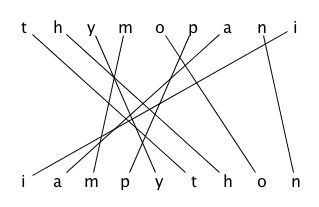

These lecture notes provide a general introduction to programming languages and then focus on a particular language: Python. The historic hero introduced in these notes is Grace Hopper, who was the first programmer of the Harvard Mark I computer and was responsible for the development of some of the first programming languages.
Copyright notice. This work is licensed under a Creative Commons Attribution 4.0 International License. You are free to share (i.e. copy and redistribute the material in any medium or format) and adapt (e.g. remix, transform, and build upon the material) for any purpose, even commercially, under the following terms: attribution, i.e. you must give appropriate credit, provide a link to the license, and indicate if changes were made. You may do so in any reasonable manner, but not in any way that suggests the licensor endorses you or your use. The licensor cannot revoke these freedoms as long as you follow the license terms.
Historic hero: Grace Hopper
Grace Brewster Murray Hopper (depicted in ) was a computer scientist and the first programmer of the Harvard Mark I, i.e. a general purpose electromechanical computer that was used during the Second World War and that was fully-inspired by Babbage's Analytical Engine. She was firmly convinced of the need of having machine-independent programming languages that brought her in the development of COBOL, one of the first high-level programming languages, which is still used today for some applications.
COBOL (i.e. the common business-oriented language) is a programming language designed for business use that brings a quite extensive use of English terms for describing the operations of a program. The idea of adopting, for the very first time, English for commands made the programming language a bit more verbose but also more readable and even self-documenting. Just for making an example, in today's languages if we want to compare if the value assigned to a variable x is greater than the one assigned to another variable y we should use x > y. In COBOL, the same comparison is done with the following instruction: x IS GREATER THAN y.
A brief history of programming languages
After the Second World War, several programming languages have been developed according to several design principles and intended usage in terms of the computational problems to be solved. While all of them, in principle, make possible to develop solutions for any solvable computational problem, some of them are more suited for a specific domain than others. For instance, COBOL has been developed for business applications, while FORTRAN was designed to deal with scientific computing.
A graphic timeline summary of some of the main programming languages from 1954 to 2017. The different line colour is used only for readability reasons, and it does not have any particular meaning.
While an extensive analysis of all the programming languages is out of the scope of the topics of these lectures, it is worth mentioning, at least graphically, a timeline of their evolution, shown in . As highlighted in the timeline, we are going to introduce and use a particular programming language in this course, i.e. Python, in particular according to its third version released in 2006.
Python
Python is an high-level programming language for general-purpose programming, which is currently one of the most used languages for programming in the Web, for Data Science and Natural Language Processing tasks. The good thing about Python is that it is one of the simple languages for starting to study how to program and create software. In addition to that, another good thing is that you are already able to create first elementary programs in Python, since you already know the language.

The resolution of the anagram ThyMopani into the real sentence it hides, i.e. I am Python.
In fact, as shown in , the pseudo-language we have used since the beginning to describe algorithms, i.e. ThyMopani, is actually an anagram of the sentence I am Python. In this course, we will use Python in its latest version, i.e. Python 3. Luckily, there are a lot of resources freely available online for learning this language from scratch, such as:
an other book entirely dedicated to problem solving and algorithms developed in Python .
In this lecture, we introduce the right nomenclature that is used in Python for referring to the various aspects of the language that we have already addressed when using ThyMopani in the previous lectures.
Functions and their execution
When in the past lectures we have proposed the use of specific tokens for defining an algorithm, i.e. def <algorithm>(<param_1>, <param_2>, ...), we actually provided a mechanism for implementing functions in Python. Functions are a common feature of any programming language, since they provide a mechanism for listing a sequence of instructions (which implements an algorithm) under a particular name, so as to organise a block of reusable code to solve a particular computational problem.
In Python, like on other programming languages, we can split functions into two different sets: built-in functions, and user-defined functions. Built-in functions are the ones that are made available by the programming language itself, and that can be reused for addressing a particular task on some values. For instance, the function def len(<collection>) for counting the items in a collection, or the constructors list() and set() are functions of this type. The other kind of functions, i.e. the user-defined ones, groups all the functions written by a user of the language for addressing some specific requirements or tasks that are not addressable by means of one built-in function directly. All the algorithms we have introduced in the past lectures, for which we have provided the pseudo-code, comply with this latter kind of functions. In fact, they can be seen as user-defined functions.
All the functions, either built-in or user-defined, can be run. Some of those that we have seen in the past lectures may be run without specifying any input values – e.g. the aforementioned constructors for lists and sets – and return a new object of a specific kind. Others, instead, need to be run by specifying the necessary input values, such as def len(<collection>). One of the most used and important functions of this kind is def print(<object_1>, <object_2>, ...). This function is very useful since it allows one to print to the screen a particular value (that can be referred by a variable).
The mechanism that is used in Python for running a function is just to call it by its name and, thus, specifying the required input value, if any. For instance, is showing the definition of a simple function. The code defined by the function won't run until it is explicitly requested, i.e. when it is called by specifying 41 as input.
def add_one(n): # define a function
return n + 1
result = add_one(41) # run the function specifying 41 as input
print(result) # print the result stored in the variable 'result'
The definition of a simple function and its execution using 41 as the input value. The result of its execution is then stored in a variable and printed on the screen.
Types, classes and objects
In programming languages, classes are extensible templates for creating objects having a certain type. In practice all the values (e.g. numbers and strings) and items (e.g. lists and sets) we create are actually objects of a certain class. The creation of objects of a certain kind is performed by calling a constructor, i.e. a special function (e.g. list() for lists) which creates a new object of that class.
The advantage of organising all these types of values as classes is that each object made available a set of methods that allow one to interact with the object itself. A method is a particular kind of function that can be run only if directly called via an object. Their fingertip is organised as follows: <object>.<method>(<param_1>, <param_2>, ...). For instance, all the operations we have introduced for manipulating lists are actually defined as methods of the class list, e.g. <list>.append(<item>), <list>.remove(<item>), etc.
Even if it is possible to create our own classes and methods, this topic goes beyond the actual scope of this course. However, it is possible to understand how to create these items by reading the documentation that has been provided as links in this lecture notes in .
Immutable and mutable values
We have already talked about the mutability and immutability of certain kinds of objects when we have introduced the difference between lists and tuples. In particular, a mutable object, like a list, is an object that can change in time – a list can be created empty, can be populated with new values, some of them can be removed, etc. On the other hand, an immutable object, like a tuple, is that entity that, once it is created, cannot be further modified. In particular, Python basic types are grouped in the following way:
strings, numbers, booleans, None, and tuples are immutable;
lists, sets, and dictionaries are mutable.
This distinction is very important when we use these kinds of objects as the input of functions or methods, since the behaviour of how they are handled can change if we have to deal with mutable or immutable types. For instance, consider the following snippet of code:
def add_one(n):
n = n + 1
return n
my_num = 41
print(my_num) # 41
result = add_one(my_num)
print(my_num) # 41
print(result) # 42
In this example, there is a simple function that sum 1 to the number passed as input and then returns it. However, we are using always the same variable n for storing the result of the operation before returning it. However, since numbers are immutable, the actual value associated to the original my_num, i.e. the variable used as the input of the execution of the function def add_one(n), is not modified as consequence of the execution of the function itself. This is the behaviour of immutable values, since they are passed by value as input of functions. It means that the value associated with the variable my_num is actually copied to the variable which defines the input parameter of the function, i.e. n, before executing the code of the function itself.
Contrarily, mutable objects work in a slightly different way. For instance, consider the following snippet of code:
In this case, since the list is a mutable object, the list passed as input to the function by means of the variable my_list is not copied into the variable defining the input parameter of the function, i.e. l, but rather it is only referenced by such parameter – i.e. both my_list and l are actually referring to the very same list. This is the behaviour of mutable values, since they are passed by reference as inputs of functions.
This behaviours for immutable and mutable objects is also in assignements, when they involve variables. This is briefly described by the following excerpt of code:
# Immutable objects
my_num_1 = 41
my_num_2 = my_num_1
my_num_1 = my_num_1 + 1
print(my_num_1) # 42
print(my_num_2) # 41, since it is a copy of the original value
# Mutable objects my_list_1 = list() my_list_2 = my_list_1 my_list_1.append(1) print(my_list_1) # [1] print(my_list_2) # [1], since it points to the same list
Packages for additional functions
Additional functions and variables that can be used in Python are actually loaded when needed by importing the package that contains them. Packages are just a mechanism to expose Python modules. We can consider a module like a Python file (extension .py) that contains the definition of variables, functions, and even runnable code. They are organised hierarchically in directories, where each directory can be defined as a package.
The basic installation of Python makes available a huge set of packages for addressing several operations and functions. For instance, the class for creating stacks and deques we have introduced in these lectures, i.e. deque, is actually contained in a module of the package collections. Thus, for using it in Python, it is necessary to import the module by means of the following command: from <package> import <module>, as shown in .
Example of import of the module for stacks and queues.
Exercises
Implement all the algorithm developed in the past lectures in Python, and try to run them according to some exemplary inputs.
After running the previous exercise, have you noticed some differences between ThyMopani and Python? If that is the case, please write them down.
Acknowledgements
I would like to thank Sebnem Kabadayi, one of the students of the 2017/2018 course, for having suggested Miller and Ranum's book about Python, problem solving and algorithms, which has been added to the list of material suggested for learning Python of this lecture. I would also like to thank Agata Rotondi, Research Fellow at the Digital and Semantic Publishing Laboratory, for having suggested Code Academy as a tool for learning Python by examples.